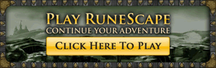
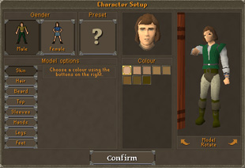
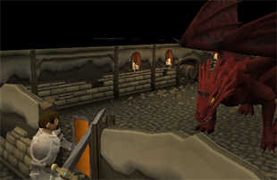

")
How do I get started?
Introduction | Creating an Account | The RuneScape Lobby | Playing For the First Time | Unstable Foundations
Introduction
Getting started in RuneScape is a quick and easy process. Within a few minutes you can create an account and start playing the game!
Playing the Demo
If you haven't played RuneScape before, the fastest way to get into the game and try it out is to play the instant demo. Simply click here to load the game then, once it has finished loading, click the 'Play Now' button in the 'Instant Demo' column. You'll be taken straight into the game and playing in no time (see Playing For the First Time below).
The demo does have some limitations, but should give you enough of a taster to see if you enjoy playing it. Your progress in the demo will be saved to your computer, but it will not be password protected; anyone who uses your computer will be able to either access it too or save over it. If you enjoy the demo and would like to keep your progress, make the character your own, open up the game world and be able to access your character from other internet-connected computers, simply create a free account (follow the prompts in-game for how to do this).
Creating an Account
Playing For the First Time

You will be asked 'Do you want to install and run RuneScape?'
You should check the box that appears next to 'Always trust content from Jagex Ltd' and then click 'Yes'.
This will take you into the game where you can select different detail modes or worlds, or just log in to play straight away. We recommend you try the High Detail mode first. If you have problems with the High Detail mode, try the Standard Detail version by selecting it on the log-in screen. Failing that, use Safe Mode.

Here you will be presented with a wide variety of options for your character and what they look like. You can keep adjusting this as much as you like in this interface, or you can simply click 'Preset' to be given a previously generated character. Later, you may pay some characters in-game to change your look if you decide you'd prefer a different haircut, clothes or even gender. Click here to read about changing your look in-game.
Once you have finished you should click the 'Confirm' button, which will launch your character into the opening quest, Unstable Foundations, where some friendly and not-so-friendly citizens of RuneScape await you.
The RuneScape Lobby

The RuneScape Lobby brings together a number of useful features before you get into the game proper. The lobby has five sections accessed via the tabs at the top of the screen:
- Player info - shows where and when you last logged in, status of email registration, recovery question status, how many messages from Jagex are in your Message Centre, how much credit you have left, and the message of the week.
- World select - this shows a list of all available worlds. This is more fully explained here.
- Friends chat - shows your Friends List and Ignore List, and lets you chat to your friends before you log in. This is more fully explained here.
- Clan Chat - lets you log into a Clan Chat channel before heading into the game. This is more fully explained here.
- Options - these are the display options, letting you set your display mode, screen size, and graphics and audio settings. This is more fully explained here.
All tabs have the 'Click here to play' button and your favourite worlds for instant access. The Friends Chat and Clan Chat tabs both have the Report Abuse button, should you need it.
When you log out of the game, you can choose to come back to the lobby, so will not need to re-enter your password when you click to play again. To fully log out of the game, click on the 'x' next to the lobby's Options tab.
Unstable Foundations

This should only take about 15 minutes to complete. When you've finished, your character will be free to explore Lumbridge, and your RuneScape adventures can truly begin!
For more information on what you can do when you first enter RuneScape and how you can do it, please see the Beginners' Guide section.

More articles in
How do I get started?
|
|